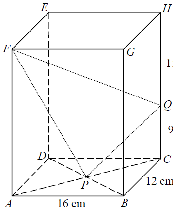

三角學 · 立體圖形中的角

$$A(0,0,0),\ B(16,0,0),\ C(16,12,0),\ F(0,0,24)$$
$P$ 是底面對角線的交點，即底面中心：$P(8,6,0)$。
$CH=9+15=24$，而 $Q$ 在 $CH$ 上距 $C$ 為 $9$，故 $Q$ 在 $C$ 之上 $9$ 個單位：
$$Q(16,12,9)$$
$$\overrightarrow{FP}=(8,6,-24),\qquad \overrightarrow{FQ}=(16,12,-15)$$
$$|\overrightarrow{FP}|=\sqrt{64+36+576}=26,\qquad |\overrightarrow{FQ}|=\sqrt{256+144+225}=25$$
$$\overrightarrow{FP}\times\overrightarrow{FQ}= \begin{vmatrix}\mathbf{i}&\mathbf{j}&\mathbf{k}\\ 8&6&-24\\ 16&12&-15\end{vmatrix} =(198,\,-264,\,0)$$
$$|\overrightarrow{FP}\times\overrightarrow{FQ}|=\sqrt{198^{2}+264^{2}}=330$$
$$\sin\angle PFQ=\frac{330}{26\times25}=\frac{330}{650}=\frac{33}{65}$$
答案為 A。